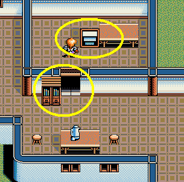

| 概要 | 情報 | アイテム一覧 |
| 敵キャラ一覧 | 攻略チャート | 地図 |
| ダウンロード | 英雄伝説 攻略へ |
|
第一章 オープニング 建物の外へ出る エスアルタの出口から出ようとする 東へ移動し、畑にいる男性に話しかける 裏口から外へ出る スライムを適当に倒す エスアルタへ戻る (イベント) 岬の洞窟を抜けて、ルディアに入る (イベント) リュナンがリーダーとなり、ルディアを出る 東にあるクルスの村へ移動する (イベント) Lv.6まで上げてローを仲間にする ルディアの南東にあるベルガ鉱山へ移動しレベル上げ ベルガ鉱山から北西へ移動し、ネリアの港で装備を調える ベルガ鉱山へ移動し、「司令官」を倒す 司令官は、サイレス1を使ってくるので肉弾戦になります。そのために、 「レスの葉」を多く持っておくことをお勧めします。 クルスの村へ移動し、神父に話しかける (イベント) ルディアへ移動する ルディア城内で「司令官」と戦う 司令官の攻略方法は同じです (イベント) |
|
第二章 「ギルモアの涙」をもらう リネアの港へ移動し、船長に話しかける 宿で一晩寝る (イベント) 船に乗ってロンドへ移動 ロンドの西にある血流の洞窟へ行く 洞窟の一番奥の「ガルゴ」を倒す ロンドの親子に事情を話す (イベント、ゲイルが離脱) 血流の洞窟から南東にあるラルファの砦へ行く ラルファの砦にはびこるモンスターを全て倒す ラルファの砦で「ポム」に話しかける ラルファの砦の北にあるグエンの塔へ行く グエンの塔の最上階にある鍵のかかった扉へ行く ラルファの砦へ戻る (イベント) ラルファの砦の西にあるマスクーンへ移動 マスクーンのモンスターを倒す 奥の家にいる「アクダム」と戦う アクダムには負けます (イベント) ラルファの砦の道具屋に話しかけ「粘土」をもらう グエンの塔へ行き、扉の粘土型を作る ラルファの砦へ戻り、道具屋に粘土型を渡す 一晩寝る (イベント、ロー離脱) グエンの塔へ行く (イベント) サイレス1を入手し、マスクーンへ行く アクダムと戦う サイレス1を使用すればすぐに逃げて戦闘が終了します ラルファの砦へ行き、隊長の家にいる老人に話す マスクーンへ行き、村長の家にある棚と机を動かし、地下室へ移動  (イベント) マスクーンの北西にあるリーゼルへ移動 家にいる老人に話しかける マスクーンの村長に話しかける リーゼル兵器、家にいる老人に話しかける (町がモンスターだらけに) リーゼルの城に入り、地下牢へ移動 牢屋にいる人に話しかける リーゼルの北西へ移動し、ロエルの家でロエルに話しかける リーゼルの城へ行き、全ての装備を外した状態で入れない扉へ入る ボスの「ヘルニルド」と戦う サイレス1を使う必要は特にありません。肉弾戦に近いので、回復アイ テムはたくさん持っておくべきです (イベント) |
| 概要 | 情報 | アイテム一覧 |
| 敵キャラ一覧 | 攻略チャート | 地図 |
| ダウンロード | 英雄伝説 攻略へ |